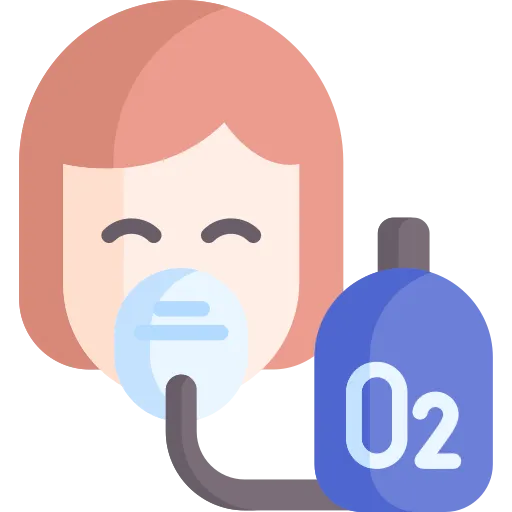

Six devices, one number that tells you which to pick, one patient group where more oxygen is the wrong answer, and the situations where the pulse oximeter lies.
Oxygen looks like the easiest topic in respiratory. It is not. It is a topic where the intuitive answer is wrong three separate times.
Points get lost here in three predictable ways.
It is not. Oxygen is a drug with a dose, a target and a toxicity.
Too much worsens outcomes after cardiac arrest. It may enlarge an infarct. In COPD it causes respiratory failure. If a question offers "increase to 100 percent", read the other options carefully first.
SpO2 measures the percentage of hemoglobin that is saturated. It does not measure how much hemoglobin there is, or what it is saturated with.
An anemic patient can read 99 percent and still be starving tissue. A fire victim with carbon monoxide poisoning can read 100 percent and be dying.
Six devices with overlapping flow ranges is a memorisation problem. One question turns it into a reasoning problem. Does this device supply the whole breath, or does the patient top it up with room air.
Answer that and low-flow versus high-flow stops being a list to learn.
For every device below, you should be able to say four things with the book closed: what it delivers, the clue in a scenario that points to it, the priority nursing action once it is on, and the one thing that makes it fail.
If you cannot say all four out loud, you do not know it yet. Familiarity is not recall.
| Device | Flow and FiO2 | Clue in the scenario | Priority action | What makes it fail |
|---|---|---|---|---|
| Nasal cannula | 1 to 6 L/min, FiO2 24 to 44 percent | Stable patient, mild hypoxia, needs to eat and talk. | Humidify above 4 L/min. Check the ears and nares. | Fast deep breathing dilutes it, so the real FiO2 drops. |
| Simple face mask | 5 to 10 L/min, FiO2 40 to 60 percent | Moderate hypoxia, cannula is not enough. | Keep flow at 5 L/min or above. | Under 5 L/min the patient rebreathes their own carbon dioxide. |
| Non-rebreather | 10 to 15 L/min, FiO2 80 to 95 percent | Severe hypoxemia, trauma, carbon monoxide poisoning. | Keep the reservoir bag inflated and the seal tight. | A collapsing bag. Never run it under 10 L/min. |
| Venturi mask | 4 to 12 L/min, FiO2 24 to 50 percent, precise | COPD, or anywhere the exact FiO2 matters. | Match the coloured adapter to the ordered FiO2 and flow. | Wrong adapter, or entrainment ports blocked by bedding. |
Write these four rows on one index card, by hand. Cannula for comfort. Simple mask for moderate. Non-rebreather for emergency. Venturi for precision. That card answers most device questions.
Oxygen travels from the air to the mitochondria down a pressure gradient. Each step loses some.
| Where | PO2 in mmHg | Why it dropped |
|---|---|---|
| Atmosphere at sea level | 159 | 21 percent of 760 mmHg |
| Trachea, humidified | 149 | Water vapour displaces some oxygen |
| Alveoli | 100 to 104 | Carbon dioxide is present and air mixes with residual gas |
| Arterial blood, the PaO2 | 80 to 100 | Normal for a healthy adult |
| Tissues | 40 | Where oxygen is consumed |
| Mitochondria | 1 to 10 | The final destination |
Discrimination axis: saturation of what you have, versus how much is dissolved.
Almost all oxygen in blood rides on hemoglobin, about 98.5 percent. Each molecule carries four. One gram of fully saturated hemoglobin carries 1.34 mL.
The remaining 1.5 percent is dissolved in plasma. Only dissolved oxygen can diffuse into tissue. Hemoglobin is the reservoir that keeps refilling it.
The percentage of hemoglobin that is carrying oxygen.
Normal 94 to 100 percent.
It says nothing about how much hemoglobin exists. A patient with a hemoglobin of 6 can read 99 percent. That patient is still hypoxic at the tissue.
The partial pressure of oxygen dissolved in arterial blood.
Normal 80 to 100 mmHg.
This is the pressure that drives oxygen into tissue. It is also what fills hemoglobin in the first place.
The relationship between PaO2 and SpO2 is not a straight line. It is an S-shape, and the shape has a clinical point.
| PaO2 | Roughly SpO2 | Where you are on the curve |
|---|---|---|
| 100 | 98 percent | Fully saturated |
| 80 | 95 percent | Still on the flat part |
| 60 | 90 percent | The edge. The steep drop starts here |
| 40 | 75 percent | Severe hypoxemia |
| 27 | 50 percent | The P50, the half saturation point |
An SpO2 of 90 percent corresponds to a PaO2 of roughly 60 mmHg. Learn that pair as one fact.
Above it you are on the flat plateau. PaO2 can swing a long way and the saturation barely moves. Below it you are on the cliff. A small further drop in PaO2 drops the saturation hard.
So a patient falling from 92 to 88 is a bigger event. A fall from 100 to 96 is not.
| Shift | Caused by | What hemoglobin does |
|---|---|---|
| Right | Higher temperature, higher CO2, lower pH, higher 2,3-DPG | Lets go of oxygen more easily, which helps working tissue |
| Left | Lower temperature, lower CO2, higher pH, lower 2,3-DPG, carbon monoxide | Holds on to oxygen more tightly, which starves tissue |
The right shift causes: CO2 up, Acid meaning pH down, DPG up, Exercise, Temperature up.
Every one of those describes hard-working tissue. The body loosens hemoglobin's grip exactly where oxygen is needed most.
Oxygen is prescribed, documented and titrated like any other drug. It needs an order except in an emergency.
| Reason | The threshold | Where you see it |
|---|---|---|
| Hypoxemia | PaO2 under 60 mmHg or SpO2 under 90 percent | ARDS, pneumonia, PE, heart failure exacerbation |
| Suspected hypoxemia | Clinical signs while the gas is pending | Trauma, acute distress, cardiac arrest |
| Severe trauma | Regardless of the saturation | Major bleeding, shock, multiple injuries |
| Acute MI | Only if SpO2 is under 94 percent | STEMI or NSTEMI with respiratory compromise |
| After anesthesia | During recovery | Post-anesthesia care unit |
| Carbon monoxide poisoning | 100 percent regardless of the saturation | Fire victims, faulty heaters |
Carbon monoxide binds hemoglobin around 200 times more strongly than oxygen. The pulse oximeter cannot tell oxyhemoglobin from carboxyhemoglobin, so it counts both as saturated.
A fire victim reading 99 percent may have almost no oxygen-carrying capacity left.
Give 100 percent oxygen through a non-rebreather and get a co-oximetry level. Do not titrate off the pulse oximeter in this patient.
| Patient | Target SpO2 | Why that number |
|---|---|---|
| Most adults | 94 to 98 percent | Enough oxygen without the harm of excess |
| COPD with CO2 retention | 88 to 92 percent | Preserves the hypoxic drive |
| Acute MI without hypoxia | 94 to 98 percent | Hyperoxia may enlarge the infarct |
| Acute stroke | 94 to 98 percent | Hyperoxia may worsen the ischemic injury |
| Premature neonates | 91 to 95 percent | Prevents retinopathy of prematurity |
| During resuscitation | 100 percent at first | Titrate down once circulation returns |
Titrate to the lowest FiO2 that reaches the target. Chasing 100 percent is not thoroughness.
Discrimination axis: does the device supply the whole breath, or does the patient top it up with room air.
A normal adult pulls about 30 to 40 L/min at peak inspiration. That single number explains the entire low-flow and high-flow split.
Flow is less than the patient's inspiratory demand, so they draw in room air alongside it.
FiO2 varies with the breathing pattern. Fast and deep means more room air and a lower real FiO2.
Comfortable and well tolerated.
Examples: nasal cannula, simple face mask, partial rebreather, non-rebreather.
Flow meets or exceeds inspiratory demand, so the patient breathes only what the device gives.
FiO2 is precise and consistent regardless of how they are breathing.
Less comfortable, more reliable.
Examples: Venturi mask, high-flow nasal cannula, aerosol mask, T-piece or trach collar.
| Flow | Roughly FiO2 | Note |
|---|---|---|
| 1 L/min | 24 percent | The lowest setting |
| 2 L/min | 28 percent | Common starting point for mild hypoxia |
| 3 L/min | 32 percent | Moderate supplementation |
| 4 L/min | 36 percent | Humidify at or above this rate |
| 5 L/min | 40 percent | Practical maximum for comfort |
| 6 L/min | 44 percent | Above this, move to a mask |
The cannula wins on tolerance. The patient can eat, drink and hold a conversation. Over days rather than minutes, that matters.
It also still works in a mouth breather. Oxygen fills the nasopharynx and gets drawn in with the next breath. Delivery is reduced, not lost.
| Device | Flow | FiO2 | The thing that catches people |
|---|---|---|---|
| Simple face mask | 5 to 10 L/min | 40 to 60 percent | Must run at 5 L/min or more, or the patient rebreathes their own carbon dioxide |
| Partial rebreather | 6 to 10 L/min | 60 to 75 percent | Keep the reservoir bag at least a third inflated |
| Non-rebreather | 10 to 15 L/min | 80 to 95 percent | One-way valves stop exhaled air re-entering. The bag must stay up |
| Venturi mask | 4 to 12 L/min | 24 to 50 percent, precise | The adapter sets the FiO2, so it must match the order |
Use it for: severe hypoxemia, carbon monoxide poisoning, trauma and shock, or as a bridge to intubation.
A deflating bag means the patient is out-breathing the flow. Turn it up.
Use it for: COPD, weaning down from higher oxygen, or anywhere the exact concentration matters.
Keep the entrainment ports clear. A blanket over them changes the delivered FiO2.
| Setting | Range | What it buys you |
|---|---|---|
| Flow | 10 to 60 L/min | Meets or exceeds inspiratory demand |
| FiO2 | 21 to 100 percent | Set independently of the flow |
| Temperature | 31 to 37 degrees C | Heated and humidified, so high flow is tolerable |
| PEEP effect | About 1 cmH2O per 10 L/min | Mild positive pressure holding alveoli open |
HFNC does four things a mask cannot. It flushes carbon dioxide out of the nasopharynx. It reduces the work of breathing by meeting demand. It adds a little PEEP. And the patient can still eat and talk.
In acute hypoxemic respiratory failure it can sometimes prevent intubation altogether.
Two calculations show up. Estimating FiO2 on a cannula, and reading a P to F ratio.
At 3 L/min: 20 plus 12 gives 32 percent.
This is an estimate and only for a nasal cannula. The real FiO2 moves with respiratory rate, tidal volume and breathing pattern.
The Venturi uses the Bernoulli principle. Oxygen shooting through a narrow port drags room air in behind it, at a fixed ratio.
A lower FiO2 needs more entrained air. That is why the low settings deliver the highest total flow.
| FiO2 wanted | Oxygen to air ratio | Oxygen flow | Total flow delivered |
|---|---|---|---|
| 24 percent | 1 to 25 | 4 L/min | About 104 L/min |
| 28 percent | 1 to 10 | 4 L/min | About 44 L/min |
| 35 percent | 1 to 5 | 8 L/min | About 48 L/min |
| 40 percent | 1 to 3 | 8 L/min | About 32 L/min |
| 50 percent | 1 to 1.7 | 12 L/min | About 32 L/min |
PaO2 of 80 on an FiO2 of 0.40 gives 80 divided by 0.40, which is 200.
The ratio accounts for how much oxygen you are already giving. A PaO2 of 80 is reassuring on room air. On 100 percent it is alarming.
| P to F ratio | What it means |
|---|---|
| Over 400 | Normal gas exchange |
| 300 to 400 | Mild impairment |
| 200 to 300 | Mild ARDS by the Berlin criteria |
| 100 to 200 | Moderate ARDS |
| 100 or less | Severe ARDS. May need ECMO |
The Berlin criteria apply these bands with a PEEP of 5 or more. Mild is 200 to 300. Moderate is 100 to 200. Severe is 100 or under.
Discrimination axis: this patient breathes because oxygen is low, not because carbon dioxide is high.
A healthy person's drive to breathe comes from rising carbon dioxide. A COPD patient who has retained carbon dioxide for years has stopped responding to it.
What is left is the hypoxic drive. Low oxygen is the only signal telling them to take the next breath.
Give high-flow oxygen and you remove the stimulus. Then breathing slows. Carbon dioxide rises. The pH falls into respiratory acidosis. Carbon dioxide narcosis follows, and then respiratory failure.
The whole sequence starts with a well-meaning increase in the flow rate.
| Decision | In COPD | Why |
|---|---|---|
| Target SpO2 | 88 to 92 percent | Enough oxygen, hypoxic drive intact |
| First device | Venturi mask at 24 to 28 percent | The FiO2 is exact, not a range |
| Alternative | Nasal cannula at 1 to 2 L/min | Low flow and more comfortable |
| Follow-up | ABG within 30 to 60 minutes | Catches carbon dioxide retention early |
A COPD patient who becomes confused or drowsy after oxygen is started is not under-oxygenated. They are retaining carbon dioxide.
Look for confusion, a falling level of consciousness, flushed skin, and asterixis. Asterixis is a flapping tremor of the outstretched hands.
The instinct is to turn the oxygen up. That is the wrong direction. Get an ABG and call the provider.
| Risk | Target | Why |
|---|---|---|
| Retinopathy of prematurity | SpO2 91 to 95 percent | Excess oxygen damages developing retinal vessels |
| Bronchopulmonary dysplasia | Avoid prolonged high FiO2 | Oxygen injures immature lung tissue |
| Free radical injury | Lowest effective FiO2 | Premature infants have very limited antioxidant defence |
Above 50 percent FiO2, held for 24 to 48 hours, oxygen starts damaging the lung. It was given to help that lung. Four mechanisms are at work.
| Type | Threshold | Time course | What you see |
|---|---|---|---|
| Pulmonary toxicity | Over 50 percent FiO2 | 24 to 48 hours and beyond | Tracheobronchitis, falling lung compliance, an ARDS-like picture |
| CNS toxicity, the Paul Bert effect | 100 percent above 2 atmospheres | Minutes to hours | Seizures, tunnel vision, tinnitus. Hyperbaric settings only |
| Retinopathy of prematurity | Variable, in neonates | Days to weeks | Abnormal retinal vessel growth, possible blindness |
Dyspnea worsening on oxygen is the one worth naming. It reads as "they need more" and it means the opposite.
Assess before you start. Assess again after every change. Both halves get tested.
| What you assess | What you are looking at | Why it matters |
|---|---|---|
| Respiratory status | Rate, depth, pattern, work of breathing | The baseline you will compare everything to |
| Saturation | SpO2 at rest and on exertion | Decides whether oxygen is needed at all |
| Lung sounds | Crackles, wheezes, diminished areas | Points at the underlying cause |
| Level of consciousness | Alert, orientated, confused | Hypoxia and carbon dioxide retention both show up here |
| Skin colour | Cyanosis, pallor, flushing | Central cyanosis is severe and late |
| History | COPD, heart failure, neuromuscular disease | Sets the target and the device |
Humidify above 4 L/min. Dry gas at that rate strips the nasal mucosa, and a cracked mucosa bleeds and hurts.
Oxygen does not burn. It makes everything else burn faster and hotter.
| Topic | What you teach |
|---|---|
| Fire safety | No smoking, keep away from flames, post the sign |
| Using the equipment | How the cannula or mask should sit, how to check the flow, when to call |
| What to report | Worsening breathlessness, chest pain, confusion, blue lips |
| Skin care | Keep skin clean and dry, water-based lubricant only, report soreness |
| Activity | Use portable oxygen as prescribed, pace activities, rest between them |
| Home oxygen | Equipment care, supplier contact, when to call emergency services |
Document the device, the flow rate, the saturation and how the patient responded. All four, every time you change something.
| Problem | Likely cause | What you do |
|---|---|---|
| Saturation is not improving | Equipment fault, poor seal, breathing pattern, or the patient is deteriorating | Check the equipment, reposition the device, reassess the patient. Then consider a higher FiO2 or a different device, and notify the provider. |
| Dry or sore nose | Flow above 4 L/min with no humidification | Add a bubble humidifier, use a water-based gel, consider a mask if high flow is needed. |
| Skin breakdown | Pressure from the device, moisture, poor fit | Reposition the tubing, pad the pressure points, check the fit, alternate devices where possible. |
| The patient keeps taking it off | Discomfort, confusion, claustrophobia | Find out which. Try a different device, explain what it is for, and treat restraint as a last resort. |
| The non-rebreather bag collapses | Flow too low, or a leak | Increase to 10 to 15 L/min, check every connection, confirm the valves are seated. |
| Confusion or drowsiness on oxygen | Carbon dioxide retention in COPD, or worsening hypoxia | Get an ABG. In a known retainer, reduce the FiO2. Notify the provider immediately. |
These should be automatic. If you have to reason toward one of them, it is not learned yet.
| Number | Meaning |
|---|---|
| 94 to 98 percent | Target saturation for most adults |
| 88 to 92 percent | Target saturation in COPD with carbon dioxide retention |
| 91 to 95 percent | Target saturation in premature neonates |
| 80 to 100 mmHg | Normal PaO2 |
| 90 percent equals 60 mmHg | Where the dissociation curve turns steep |
| 21 percent | FiO2 of room air |
| 4 percent per litre | FiO2 added by each litre of nasal cannula flow |
| 1 to 6 L/min, 24 to 44 percent | Nasal cannula range |
| 5 to 10 L/min, 40 to 60 percent | Simple face mask range |
| 10 to 15 L/min, 80 to 95 percent | Non-rebreather range |
| 4 to 12 L/min, 24 to 50 percent | Venturi mask range, and it is precise |
| 10 to 60 L/min | High-flow nasal cannula range |
| Above 4 L/min | Flow at which humidification is added |
| 5 L/min minimum | Simple mask floor, below which carbon dioxide is rebreathed |
| Over 50 percent for 24 to 48 hours | Threshold for pulmonary oxygen toxicity |
| Over 400, 200 to 300, 100 or less | P to F ratio: normal, mild ARDS, severe ARDS |
| 30 to 60 minutes | When to recheck the ABG after starting oxygen in COPD |
| 10 feet | Smoking exclusion distance from an oxygen source |
Write the device ranges on the back of the index card from section 02. Test yourself on the meaning, not the number; the exam gives you the number and asks what it means.
Reading this again will not move your score. Producing it will. Everything below is done with the page shut.
Pick any device from section 02. Without looking, say what it delivers, the clue that points to it, the priority action once it is on, and the one thing that makes it fail.
If you can do that for all four, you are ready. If you cannot, you know exactly which section to reopen.
10 questions with full rationales covering device selection by FiO2 need, flow rate ranges, humidification, fire safety, COPD oxygen management, and blood gas interpretation. Choose Practice Mode for instant feedback or Exam Mode to simulate test conditions.
Nasal cannula adds about 4 percent FiO2 per litre
Venturi mask is the precise device, and the COPD answer
COPD target is 88 to 92 percent, to keep the hypoxic drive
SpO2 of 90 is a PaO2 of about 60, where the curve turns steep
Over 50 percent for over 24 to 48 hours risks lung injury
Humidify any flow above 4 litres per minute
Carbon monoxide makes the pulse oximeter read falsely normal
No flames and no petroleum products near an oxygen source